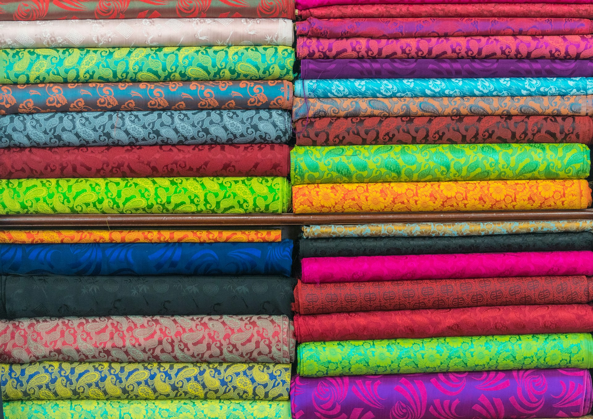
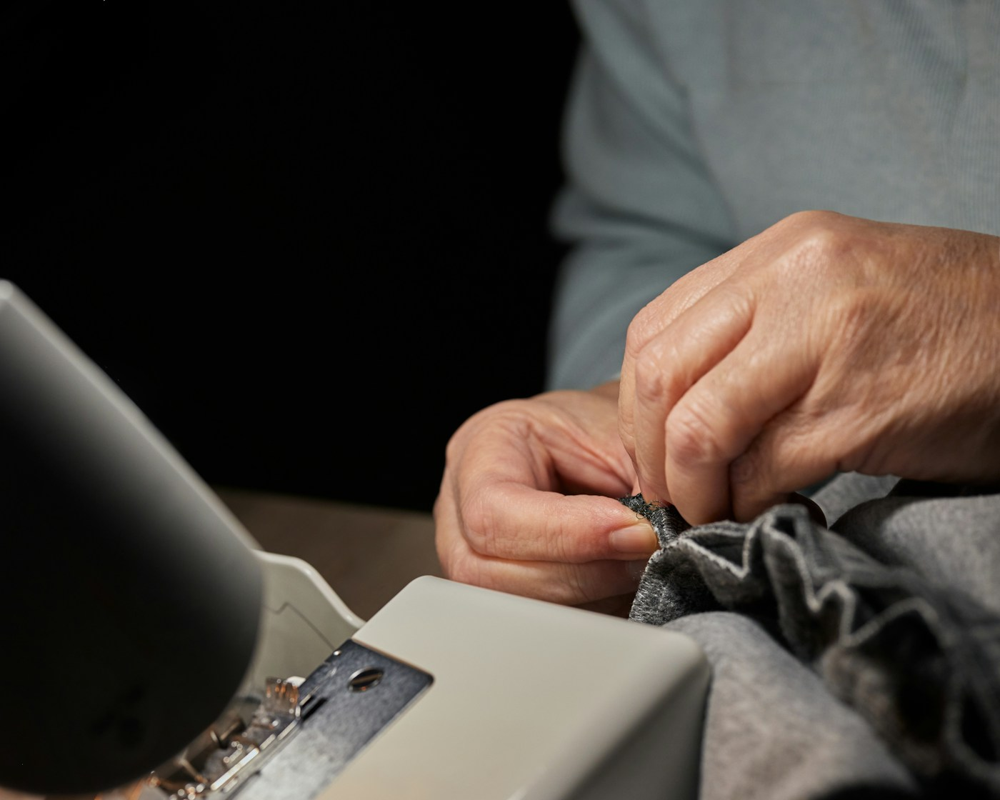

Metrový textil a látky
Více než 300 druhů látek skladem v prodejně na Praze 6 – na vzorcích, na metrech, pro šití i tvoření.
Zeptat se recepčníToto demo jsme připravili přímo pro Textil Ludmila
Potřebujete poradit s výběrem látky, objednat šití na míru nebo zjistit, jak to u nás funguje? Jsme tu pro vás.

Zákazníci se nemusí proklikávat webem a hledat odpovědi. Stačí se zeptat.
Ukázka z dema – odpovědi vycházejí z reálných informací Textil Ludmila.
Od metru látky přes šití na míru až po kompletní vybavení interiérů.
Více než 300 druhů látek skladem v prodejně na Praze 6 – na vzorcích, na metrech, pro šití i tvoření.
Zeptat se recepčníPovlečení, ručníky, přikrývky a polštáře, ubrusy i chrániče matrací – kusové zboží i značkové kousky.
Zeptat se recepčníOkenní dekorace, závěsy a drapérie i interiérové doplňky ušijeme na míru podle vašeho interiéru.
Zeptat se recepčníPlisé, Duette, římské rolety, žaluzie, Facette i Silhouette. Značky Gardinia, Alugard, Luxaflex a Mottura.
Zeptat se recepčníProfesionální konzultace, návrh řešení a montáž přímo u vás – včetně motorových systémů.
Zeptat se recepčníSekce INTERIORS dodává kompletní vybavení hotelů, nemocnic a studentských kolejí.
Zeptat se recepčníNabídka vychází ze skutečných služeb firmy – texty doladíme podle aktuálního sortimentu.
Ať už z vyhledávače, z doporučení nebo z visitky – web je tu pro něj.
Otomáčkou nebo psaním. Netlačí ho do formulářů ani do menu.
Odpoví podle informací firmy – nebo ho pošle správným směrem.
I když se zákazník ozve večer nebo neví přesně, koho potřebuje, nemusí hledat odpověď sám.

TEXTIL LUDMILA s.r.o. provozuje prodejnu metrového, bytového textilu a prádla v Praze 6 (Dejvice/Bubeneč). Vedle prodeje šije závěsy a interiérové doplňky na míru, řeší přistínění a zatemnění oken a přes velkoobchodní sekci INTERIORS dodává kompletní vybavení hotelů, nemocnic a studentských kolejí.
Informace převzaty z textilludmila.cz – nic jsme si nevymysleli.
Nebo se nejprve zeptejte digitálního recepčního výše – odpoví hned.
+420 720 943 766
Na mobilu stačí klepnout.
info@textilludmila.cz
Pro nezávazné dotazy i poptávky.
Na Hutích 693/13
160 00 Praha 6 (Dejvice/Bubeneč) · Zobrazit na mapě
| Pondělí – pátek | 9:00–18:00 |
| Sobota a neděle | Zavřeno |
Digitální recepční může být přímo součástí vašeho webu a pomáhat zákazníkům i mimo běžnou pracovní dobu.